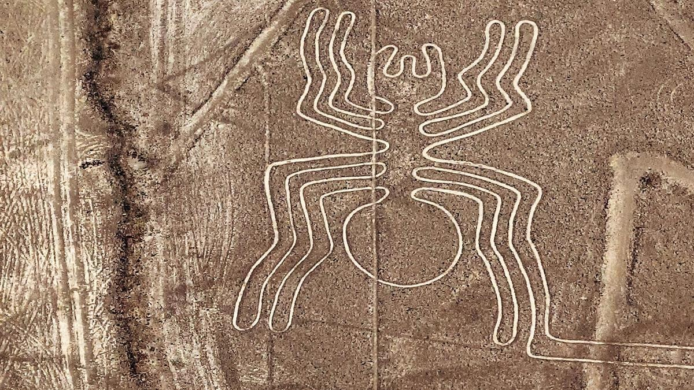
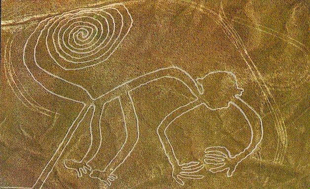
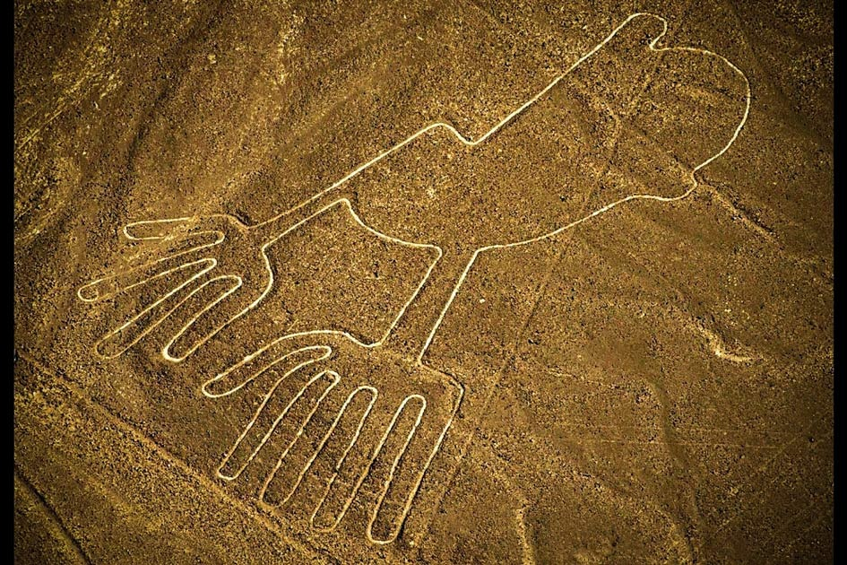
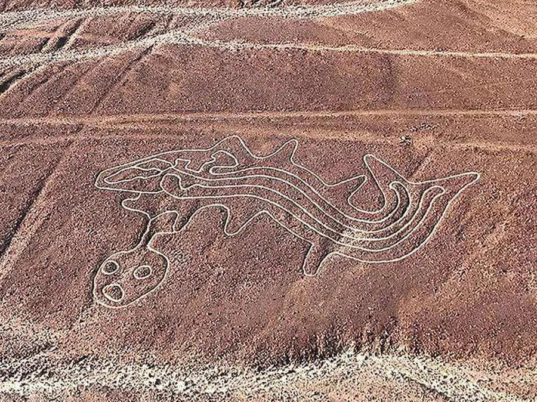

Detalles del Tour
Descubre uno de los mayores enigmas de la arqueología mundial desde el cielo. En este espectacular sobrevuelo de 35 minutos en avioneta (tipo Cessna), podrás observar claramente las impresionantes figuras geométricas y de animales como el Colibrí, el Mono, la Araña y el famoso Astronauta, trazadas en el desierto hace más de 2000 años.
Galería de Imágenes




Comentarios de Viajeros
Fernando Castillo
Impresionante. Recomiendo tomar pastillas para el mareo antes de subir porque la avioneta da muchas vueltas para que todos puedan ver las figuras de ambos lados, pero vale la pena cada segundo.
Elena Torres
Los pilotos te explican todo por los audífonos y te ayudan a ubicar las figuras. Es un tour que tienes que hacer al menos una vez en la vida.